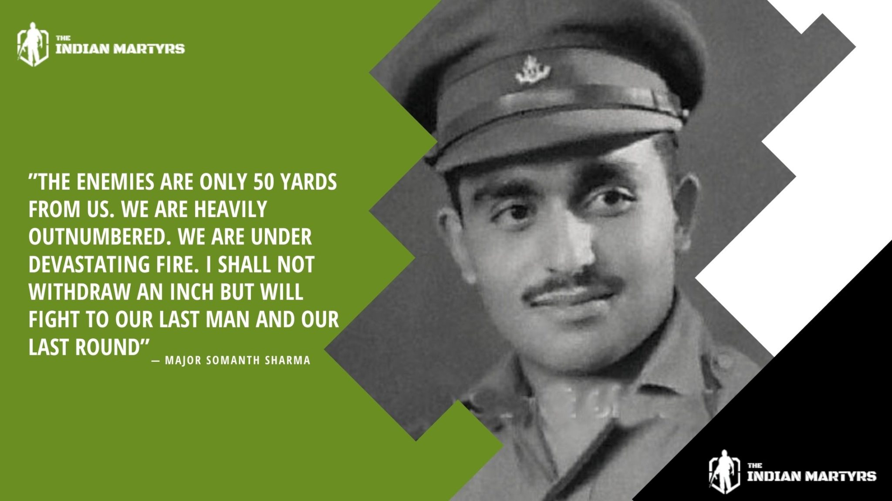
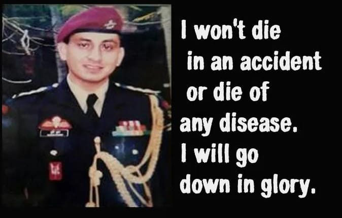
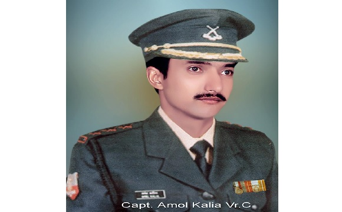
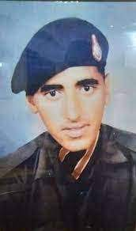

Captain Vikram Batra
Born : 9 September 1974 (Palampur, Himachal Pradesh, India)
Died : 7 July 1999 (Kargil, Jammu and Kashmir)
Years of service : 1997–1999
Rank : Captain
Unit : 13 Jammu And Kashmir Rifle
Awards : Param Vir Chakra
Captain Vikram Batra, an officer in the Indian Army, known for his heroic actions during the Kargil War in 1999,achieved martyrdom during the Kargil War in 1999. He was serving as a captain in the 13th battalion of the Jammu and Kashmir Rifles. On July 7, 1999, during the operations to capture Point 4875, also known as "Point 5140," Batra and his team encountered heavy enemy fire. Despite facing grave danger, he led his troops from the front and managed to successfully capture the strategic peak......
Read More

Born: 31 January 1923 (Dadh, Kangra district, Himachal Pradesh)
Major Somnath Sharma
Born: 31 January 1923 (Dadh, Kangra district, Himachal Pradesh)
Died : 3 November 1947 (Badgam, Jammu and Kashmir)
Years of service : 1942–1947
Rank : Major
Unit : 4th Battalion, Kumaon Regiment
Awards : Param Vir Chakra
He served in Burma during the Arakan Campaign of World War II, . Fighting in the Indo-Pakistani War of 1947-1948, Somnath Sharma was killed in action on November 3, 1947 while repulsing Pakistani infiltrators near Srinagar Airport. For his gallantry and sacrifice during the Battle of Badgam, he was posthumously awarded the Param Vir Chakra. His younger brother, Vishwa Nath Sharma, would later become the 14th Chief of the Army Staff of the Indian Army 12.His father, Amar Nath Sharma, was a military officer.Throughout his military career, Sharma was influenced by his uncle Captain K. D. Vasudeva’s gallantry in action......
Read More

Born : 24 May,1969 (Banuri, Palampur,Kangra district, Himachal Pradesh)
Major Sudhir Kumar Walia
Born : 24 May,1969 (Banuri, Palampur,Kangra district, Himachal Pradesh)
Died : 29 August 1999 (Haphruda,Kupwara, Jammu and Kashmir)
Years of service : 1988–1999
Rank : Major
Unit : 9 Para(Special Forces)4 Jat
Awards : Ashok Chakra, Sena Medal(Bar), Sena Medal
Major Sudhir Kumar Walia, was an officer of the Indian Army, who served in the elite 9 Para (SF). He graduated from the Indian Military Academy and was commissioned as a second lieutenant in the 4th Battalion, The Jat Regiment on 11 June 1988.He was a member of the Indian Peace Keeping Force (IPKF), who were sent to Sri Lanka on a peace mission. After he returned from Sri Lanka, he opted for the 9th Battalion, Para (SF), a special forces unit of the Indian Army that specializes in mountain operations. Walia was promoted as a captain on 11 June 1993,and was awarded the Sena Medal in 1994 on two occasions for his gallantry while combating militancy in Jammu and Kashmir. For his bravery, he was posthumously awarded the Ashoka Chakra, the highest peacetime military decoration in India......
Read More

Born : 26 February 1974 (Chintpurni,Una District of Himachal Pradesh)
Captain Amol Kalia
Born : 26 February 1974 (Chintpurni,Una District of Himachal Pradesh)
Died : 8 June,1999 (Batalik Yaldor Sector,Ladakh)
Years of service : 1994–1999
Rank : Captain
Unit : 12 JAK LI
Awards : Vir Chakra
Captain Amol Kalia was specially called for this operation from Delhi because of his expertise.Captain Amol Kalia had an ir-replaceable experience of staying at the Siachen Glacier -''the highest battle field of the world'' for more than 120 days. In this operation, Captain Amol Kalia along with 13 other ranks made the supreme sacrifice in the highest traditions of the Indian Army. But for the selfless devotion to duty marked with exemplary couragedisplayed by these gallant soldiers, the recapture of this vital position would not have been possible. For his bravery, Capt Amol Kalia was decorated with the Vir Chakra by the President of India......
Read More

Born : January 26, 1974 (Kalara village ,Shimla district, Himachal Pradesh)
Next
Rifleman Shyam Singh
Born : January 26, 1974 (Kalara village ,Shimla district, Himachal Pradesh)
Died : 4 July,1999 (Mushkoh Valley, Jammu and Kashmir)
Years of service : 1994–1999
Rank : Rifleman
Unit : 13 JAK RIF
Awards : Vir Chakra (Posthumous)
Rifleman Shyam Singh always aspired to join the Army and with that aim he joined the NCC at his College. After one year in College, to realise his dream,attended an Army recruitment rally in Shimla and enrolled in 13 JAK RIF on 29 December 1994 at the age of 20.Rifleman Shyam Singh volunteered to be part of Charlie company commander's assault team tasked to capture area Flat Top at Point 4875 in Mushkoh Valley during OPERATION VIJAY.Rifleman Shyam Singh's heroic, unselfish, and superhuman conduct inspired his comrades, resulting in the conquest of the strategically crucial feature. He showed incredible bravery in the face of the enemy and paid the ultimate price for the country. He was awarded Vir Chakra posthumously......
Read More